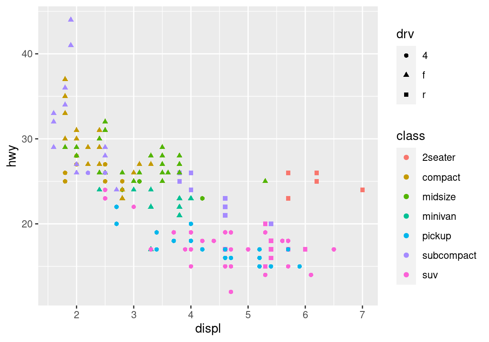

Chapter 5 R 데이터 시각화 기초
데이터 시각화란 데이터를 그래프 등의 시각적 요소로 요약하여 보여주는 것을 의미한다.
R에서는 데이터 시각화를 R의 기본 기능에 포함된 graphics 패키지를 사용하여 시각화하는 방법과 ggplot2패키지를 이용하는 방법이 있다.
이 장에서는 ggplot2를 이용하여 데이터를 시각화하는 기본적인 방법을 배운다. 여기서는 통계분석에 필요한 기본적인 그래프를 그리기 위한 기본적인 문법을 소개하는 것이지 ggplot2에 대한 체계적인 설명을 하지 않을 것이다. ggplot2는 자유로운 형식으로 그래프를 그릴 수 있는 그래프 문법을 가지고 있기 때문에, ggplot2에 대한 더 체계적인 이해를 원하는 독자는 졸저 ’R 프로그래밍’의 ggplot2를 이용한 데이터 시각화를 참조하기 바란다.
5.1 ggplot2 패키지 설치하기
R은 패키지란 단위로 R에서 사용할 수 있는 기능을 제공한다. R을 설치하면 base, stat, dataset, graphics 등의 기본 패키지가 자동으로 설치되고, R을 시작할 때마다 이러한 기본 패키지가 자동으로 적대되어 사용될 수 있도록 준비된다.
만약 R에서 기본으로 제공하는 패키지 말고 다른 패키지를 사용하려면 그 패키지를 R에 설치해야 한다.
ggplot2 패키지는 기본 기능에 포함되지 않으므로 먼저 설치를 해야 한다.
ggplot2 패키지를 설치하려면 다음 명령을 실행하면 된다. 패키지의 이름은 문자열이므로 따옴표 안에 기술해야 한다.
> install.packages("ggplot2")또는 RStudio의 우측 하단의 Packages 탭에서 [Install]을 클릭한 후 ggplot2라고 입력을 하면 된다. 패키지 설치는 한 번만 수행하면 된다.
패키지를 사용하려면 메모리에 적재를 하여야 한다. 패키지를 메모리에 적재하는 것은 library() 함수를 사용한다. 이 때 주의할 점은 이미 설치된 패키지를 지정할 때는 따옴표 없이 변수처럼 패키지를 기술해야 한다는 것이다.
> library(ggplot2)패키지의 설치는 한 번만 수행하면 되지만, 패키지를 메모리에 적재하는 작업을 패키지를 사용할 때마다 수행하여야 한다. 한번 메모리에 적재된 패키지는 R 세션이 종료되기 전까지 유지된다. 그러므로 하나의 R 세션에서는 다시 library() 함수로 동일한 패키지를 적재하지 않아도 된다. 그러나 R 세션을 종료하고 다시 시작하였다면, 기본 패키지가 아니면 자동 적재되지 않으므로 사용하기 전에 패키지를 다시 적재하여야 한다.
5.2 ggplot2 시작하기
이 절에서는 ggplot2에서 제공하는 mpg 데이터를 이용하여 ‘배기량이 커지면 연비가 낮아지는가?’ 라는 물음을 그래프를 이용하여 탐색해 보자.
mpg는 1999년과 2008년에 미국 EPA에서 조사하여 발표한 자동차 주요 모델별 연비 데이터이다.
다음 명령을 이용하여 mpg 데이터를 출력해 보자. mpg 데이터는 tibble이라는 데이터 프레임의 일종으로, 사용자의 화면의 크기에 따라 출력 내용을 조정한다. 그러므로 화면의 크기에 따라 출력되는 내용이 책과는 조금 다를 수 있다.
> mpg# A tibble: 234 × 11
manufacturer model displ year cyl trans drv cty hwy fl class
<chr> <chr> <dbl> <int> <int> <chr> <chr> <int> <int> <chr> <chr>
1 audi a4 1.8 1999 4 auto… f 18 29 p comp…
2 audi a4 1.8 1999 4 manu… f 21 29 p comp…
3 audi a4 2 2008 4 manu… f 20 31 p comp…
4 audi a4 2 2008 4 auto… f 21 30 p comp…
5 audi a4 2.8 1999 6 auto… f 16 26 p comp…
6 audi a4 2.8 1999 6 manu… f 18 26 p comp…
7 audi a4 3.1 2008 6 auto… f 18 27 p comp…
8 audi a4 quattro 1.8 1999 4 manu… 4 18 26 p comp…
9 audi a4 quattro 1.8 1999 4 auto… 4 16 25 p comp…
10 audi a4 quattro 2 2008 4 manu… 4 20 28 p comp…
# … with 224 more rowsmpg는 1999년과 2008년에 미국 EPA에서 조사하여 발표한 자동차 주요 모델별 연비 데이터이다. 데이터는 234 개의 행이 있으며, 각 행은 다음과 같은 변수로 구성되어 있다.
- manufacturer: 자동차 제조사
- model: 자동차 모델명
- displ: 자동차 배기량
- year: 제조년도
- cyl: 엔진 실린더 수
- trans: 자동차 트랜스미션 종류
- drv: 자동차 구동 방식. f=전륜구동, r=후륜구동, 4=사륜구동
- cty: 도심 연비 (마일/갤론)
- hwy: 고속도로 연비 (마일/갤론)
- fl: 연료 종류
- class: 자동차 분류
mpg 데이터에 대한 더 자세한 설명은 콘솔에 다음을 입력하여 R 도움말을 참조하기 바란다.
> ?mpg5.2.1 ggplot2 그래프의 기본 문법
mpg 데이터로부터 배기량과 고속도로 연비의 관계를 살펴보기 위해서 배기량(displ)을 x 축으로, 고속도로 연비(hwy)를 y 축으로 하는 산점도를 그려보자. 산점도에서 배기량이 커짐지면 연비가 줄어드는 경향을 관찰할 수 있다.
> ggplot(mpg, aes(x=displ, y=hwy)) + geom_point()그러면 이 산점도 그린 ggplot2 명령어의 문법을 살펴보자.
ggplot2의 명령어는 항상ggplot()함수로 시작하고,+연산자를 사용하여 그래프에 추가될 요소를 덧붙여 나간다. 이렇게 함수를+로 연결하여 사용하는 방식은ggplot2패키지의 독특한 문법으로 대부분의 다른 R 명령어에서는 이러한 방식을 사용하지 않는다.ggplot()함수는 그래프의 좌표축과 좌표평면을 만드는 함수이다. 그러므로 다음처럼ggplot()함수만 사용하고 그래프에 추가할 요소를 지정하지 않으면 좌표축과 좌표평면만 그린다.
> ggplot(mpg, aes(x=displ, y=hwy))ggplot()함수의 첫번째 인수는 그래프를 그릴 때 사용할 데이터를 지정하고, 두번째 인수는 그래프 속성과 데이터 열의 관계를 지정한다. 그래프 속성과 데이터 열의 관계는 항상aes()함수 내에 기술되고, 다음처럼<그래프 속성>=<데이터 열>의 형식으로 기술된다.
ggplot(데이터, aes(속성1=열1, 속성2=열2, ...)) + geom함수()앞의 산점도에서는 x라는 그래프의 가로축 속성에 mpg 데이터의 배기량 열 displ이 매핑되었고, y라는 그래프의 세로축 속성에 고속도로 연비 열 hwy가 매핑되었다. 다음은 그래프의 가로축에 데이터의 도심 연비 열인 cty을 매핑하여 산점도를 그린 예이다. 도심 연비가 좋은 차가 고속도로 연비도 좋다는 것을 알 수 있다.
> ggplot(mpg, aes(x=cty, y=hwy)) + geom_point()ggplot()함수에+로 연결되는 geom 함수는 그래프에 그릴 도형을 지정한다.geom_point()함수는ggplot()함수에 정의된 그래프 속성과 열의 관계를 이용하여 그래프에 점(points)이라는 도형을 그린다. ggplot2에는 점을 그리는geom_point()함수뿐 아니라 다양한 도형을 그리는 geom 함수들이 있다. 만약 다음처럼geom_point()함수가 아니라geom_smooth()함수를 연결하면 점이 아니라 데이터의 추세선을ggplot()함수에 정의된 그래프 속성과 열의 관계를 이용하여 그래프에 그린다.
> ggplot(mpg, aes(x=displ, y=hwy)) + geom_smooth()`geom_smooth()` using method = 'loess' and formula = 'y ~ x'ggplot()함수에 여러 개의 geom 함수를 연결하여 두 개 이상의 그래픽적 도형을 그래프에 그릴 수 있다. 이 경우 먼저 기술된 geom 함수의 도형이 아래 층에 그려지고 뒤에 기술된 geom 함수의 도형이 윗 층에 그려진다.
> ggplot(mpg, aes(x=displ, y=hwy)) + geom_point() + geom_smooth()`geom_smooth()` using method = 'loess' and formula = 'y ~ x'5.3 그래프 속성과 데이터 열 매핑하기 (aesthetic mapping)
앞의 산점도에서 배기량에 따라 연비가 줄어드는 관계를 조금 벗어나는 관측치들이 있다.
이 예외적인 관측치들이 자동차 종류의 차이 때문에 발생했다, 라고 가설을 세웠다 하자. 이 가설을 확인해 보려면 자동차 종류별로 관측치를 시각화할 필요가 있다. 앞서 본 geom_point() 함수는 ’점’이라는 도형을 좌표평면 상에서 그린다. 점이라는 도형은 x-축의 위치(x)와 y-축의 위치(y)뿐 아니라 색상(color), 모양(shape), 크기(size), 투명도(alpha) 등의 다른 시각적 속성을 가지고 있다. 우리는 이러한 속성 중 하나에 mpg 데이터의 class 열을 대응시켜 자동차 종류 별로 좌표평면에서 시각적으로 구분되는 점으로 표현할 수 있다.
5.3.1 범주형 변수와 색상(color) 속성의 매핑
다음은 관측치의 종류(class)에 따라 점을 서로 다른 색상(color)으로 표현한 예이다. 자동차의 종류에 따라 점이 다른 색상으로 표현되고, 어떤 색상이 어떤 자동차 종류에 대응되었는지에 대한 범례가 자동 생성된다.
> ggplot(mpg, aes(x=displ, y=hwy, color=class)) + geom_point()앞선 그래프에서 이상치로 표현되었던 점들 중 한 점만 제외하고 모두 2seater 자동차의 관측치였음을 알 수 있다. 이 종류의 차는 스포츠카로 배기량에 비해 가벼운 몸체를 가지고 있어 예외적인 연비가 관측된 것으로 보인다.
다음으로 class 열을 shape, size, alpha 등의 속성에 대응시켜 어떤 결과가 나오는지 살펴보자.
5.3.2 범주형 변수와 모양(shape) 속성의 매핑
shape 속성은 점의 모양을 결정한다. 다음은 앞의 산점도를 구동 방식(drv)에 따라 점의 모양이 다르게 표시한 예이다.
> ggplot(mpg, aes(x=displ, y=hwy, shape=drv)) + geom_point()
점의 모양과 색상을 하나의 데이터 열에 매핑하여 좀 더 데이터가 뚜렷이 구분되게 그래프를 그리기도 한다.
> ggplot(mpg, aes(x=displ, y=hwy, shape=drv, color=drv)) + geom_point()
물론 다음처럼 점의 색상과 모양을 각각 데이터의 다른 열에 매핑할 수도 있다. 다음은 점의 색은 자동차의 종류(class)에 모양은 자동차의 구동방식(drv)에 매핑한 결과이다.
> ggplot(mpg, aes(x=displ, y=hwy, shape=drv, color=class)) + geom_point()
shape을 사용할 때 주의할 점은 shape은 최대 6개의 모양으로만 점을 구분하기 때문에 class 열처럼 6개보 많은 종류가 있는 열에 매핑되면 데이터가 제대로 표시가 되지 않는다. 다음 예처럼 shape 속성에 class 열을 매핑하니 경고가 나타나고 suv 데이터를 표시하지 못한 것을 확인할 수 있다.
> ggplot(mpg, aes(x=displ, y=hwy, shape=class)) + geom_point()Warning: The shape palette can deal with a maximum of 6 discrete values because
more than 6 becomes difficult to discriminate; you have 7. Consider
specifying shapes manually if you must have them.Warning: Removed 62 rows containing missing values (`geom_point()`).5.3.3 연속형 변수와 크기(size), 색상(color), 투명도(alpha) 속성의 매핑
모양(shape) 속성은 소수의 구분되는 값으로 표현되는 범주형 변수를 표현하기 좋다. 데이터의 열이 연속형 변수이면 연속적인 값을 표현하기 좋은 가로축(x), 세로축(y), 크기(size), 투명도(alpha) 등을 이용하는 것이 좋다. 색상(color)은 범주형 변수와 연속형 변수에 모두 매핑될 수 있다. 범주형 변수로 매핑되면 구분되는 색상으로, 연속형 변수로 매핑되면 색상의 그라데이션으로 값을 표시한다.
다음은 도심 연비와 고속도로 연비를 가로축과 세로축으로 하는 그래프에서 점의 크기 속성을 배기량 열에 매핑한 결과이다. 도심 연비와 고속도로 연비가 좋은 차들은 배기량이 작은 차임을 알 수 있다.
> ggplot(mpg, aes(x=cty, y=hwy, size=displ)) + geom_point()다음은 동일한 도심 연비와 고속도로 연비 산점도에서 그래프에서 점의 색상을 배기량 열에 매핑한 결과이다. 범주형 변수가 매핑될 때와는 달리 색상의 연속적인 변화인 그라데이션을 사용하여 배기량을 표현하고 있음을 볼 수 있다.
> ggplot(mpg, aes(x=cty, y=hwy, color=displ)) + geom_point()다음은 동일한 도심 연비와 고속도로 연비 산점도에서 그래프에서 점의 투명도를 실린더 수 열에 매핑한 결과이다.
> ggplot(mpg, aes(x=cty, y=hwy, alpha=cyl)) + geom_point()5.4 ggplot 명령문을 입력할 때 자주 발생하는 문제들
ggplot은 매우 강력한 기능을 가지고 있지만 Excel 등의 GUI 프로그램에만 익숙한 사람은 문자 기반 명령어를 입력하는 것에 어려움을 느낄 수 있다. 컴퓨터는 사람만큼의 유연성을 발휘하지 못하므로 컴퓨터는 자신이 실행해야 할 명령문의 문법에 매우 까다롭게 반응한다. ggplot 명령어 입력시 흔히 발생하는 문제들은 다음과 같다.
R 명령문은 대소문자를 구분한다. 따라서
Color와color는 ggplot에서 서로 다른 인수로 인식되어 오류가 발생한다.ggplot 명령문의 키워드의 철자가 틀리면 다른 키워드로 간주하기 때문에 오류가 발생할 수 있다. 이를 방지하려면 키워드의 일부만 입력한 후
Tab키를 눌러 자동완성 기능을 사용하여 입력하는 것을 권장한다.ggplot2의 명령문을 입력할 때 여러 함수를 합쳐서 실행하기 위하여+연산자를 이용한다.4ggplot2의 명령문이 길어지면 명령문을 여러 줄로 쓰는 것이 필요한데, 보통+로 연결되는 곳에서 줄바꿈하는 것이 읽기에 좋다. 이 때 주의할 점이, 줄바꿈을+앞이 아니라 뒤에서 해야 한다는 것이다.+앞에서 하면 R은 명령문의 입력이 완성된 것으로 간주하기 때문이다.
다음은 산점도와 추세선을 한 그래프에 그린 예이다.
> ggplot(mpg, aes(x=displ, y=hwy, color=drv)) + geom_point() + geom_smooth()`geom_smooth()` using method = 'loess' and formula = 'y ~ x'
그런데 위의 명령어는 길기 때문에 스크립트 파일을 작성할 때 보기에 불편하다. 이러한 경우에 위의 명령은 다음처럼 세 줄로 나누어 기술될 수 있다. 세 함수를 연결하는 + 위치가 어디에 있는지 살펴보라. (다음 예에서 왼쪽의 > 프롬프트 아래 있는 +는 R 콘솔에서 명령문이 계속되고 있음을 나타내는 표시이다. 이 표시와 사용자가 입력한 +를 혼동하면 안 된다.)
> ggplot(mpg, aes(x=displ, y=hwy, color=drv)) +
+ geom_point() +
+ geom_smooth()만약 다음처럼 + 위치가 잘못되면 오류가 발생한다. 왜 이런 결과가 나왔고 오류 메시지의 의미는 무엇일까? R은 Enter로 명령문을 구분한다. 그러므로 첫번째 줄은 +가 없으므로 완벽한 명령문이기 입력된 것으로 간주하고 실행이되어 좌표평면만 그린 것이다. 그러고 나서 두번째 줄을 새로운 명령문으로 실행을 한다. 그런데 갑자기 명령문이 +로 시작하니 R은 명령문에 오류가 있다고 판단한다. 왜냐하면 + 연산은 왼편과 오른편에 더할 요소가 있어야 하는데, 왼편의 요소가 기술되지 않았기 때문이다.
> ggplot(mpg, aes(x=displ, y=hwy, color=drv))
> + geom_point() Error:
! Cannot use `+` with a single argument
ℹ Did you accidentally put `+` on a new line?
- R 명령문이 조금 길어지면 가장 흔하게 발생하는 실수가
( )와" "을 짝을 맞추어 제대로 입력하지 못하는 것이다.ggplot2의 명령문도 많은 함수를 사용하다 보니 이를 주의하여야 한다. 이러한 실수를 하게 되면면 R 콘솔은 명령이 계속 입력 중이라고 생각하여>가 아니라+를 콘솔의 프롬프트로 표시한다. 이 경우 가장 간단한 해결책은Esc키를 눌러 명령 입력에서 빠져나와 다시 명령문을 입력하는 것이다.
5.5 geom 함수와 그래프 계층
ggplot2의 장점은 필요에 따라 다양한 형식의 그래프를 쉽게 만들 수 있고, 만들 수 있는 형식도 무궁무진하다는데 있다. 그리고 ggplot2 그래프의 계층적 구조가 이러한 무궁무진한 그래프 형식을 만들어 내는 핵심 요소라 할 수 있다.
ggplot2는 좌표평면 위에 여러 계층으로 그래프를 겹쳐 그려서 하나의 좌표평면에 나타냄으로써 복잡한 형식의 그래프를 만들어 낼 수 있다.
다음 그래프는 배기량과 고속도로 연비의 산점도와 추세선을 한 그래프에 그렸다. ggplot() 함수에 지정한 데이터와 그래프 속성과 데이터 열 매핑이 산점도(geom_point())와 추세선(geom_smooth())에 모두 동일하게 정의되었음을 볼 수 있다.
> ggplot(mpg, aes(x=displ, y=hwy, color=drv)) + geom_point() + geom_smooth()`geom_smooth()` using method = 'loess' and formula = 'y ~ x'
ggplot() 함수가 여러 개의 geom 함수와 연결되면, 하나의 좌표평면에 각각의 geom() 함수의 결과를 층층이 그린다. 이 때, 명령문에 나타나는 순서에 따라 첫번째 나온 geom 함수의 도형이 가장 아래 계층에, 다음에 나오는 geom 함수의 도형이 차례로 그 윗 계층에 그려진다.
5.5.1 geom 함수에서 속성 매핑하기
앞의 배기량과 고속도로 연비의 산점도와 추세선을 그린 그래프에서 추세선을 선 종류(linttype)가 구동 방식(drv)에 따라 다르게 표현하고 싶다. 그런데 산점도는 점이라는 도형으로 그래프를 그리므로 선 종류라는 속성을 가지고 있지 않다. 그리고 산점도도 점의 모양(shape)이 구동 방식에 따라 다르게 표현하고 싶다고 하자. 마찬가지로 추세선은 선이라는 도형으로 그래프를 그리므로 점의 모양이라는 속성을 가지고 있지 않다.
이렇듯 여러 geom 함수를 연결하여 그래프를 그릴 때, 특정 geom 함수에만 해당하는 속성은 해당 geom 함수에서 속성과 데이터 열을 매핑하는 것이 좋다. geom 함수도 ggplot() 함수처럼 aes() 함수를 이용하여 그래프 속성과 데이터 열을 매핑하는데, 이 매핑이 geom 함수의 첫 번째 인수로 기술된다는 점만 다르다.
> ggplot(mpg, aes(x=displ, y=hwy, color=drv)) +
+ geom_point(aes(shape=drv)) +
+ geom_smooth(aes(linetype=drv))`geom_smooth()` using method = 'loess' and formula = 'y ~ x'따라서 지금까지 배운 내용으로 ggplot2 그래프를 그리는 문법을 확장하면 다음과 같다.
ggplot(데이터, aes(공통속성1=열1, 공통속성2=열2, ...)) +
geom함수1(aes(geom함수1의 속성1=열1, geom함수1의 속성2=열2, ...)) +
geom함수2(aes(geom함수2의 속성1=열1, geom함수2의 속성2=열2, ...)) +
....확장된 문법으로 맨처음 그린 배기량과 고속도로 연비의 산점도와 추세선 그래프에서, 산점도의 점은 구동 방식에 따라 다른 색으로 표시하지만, 추세선은 모든 데이터에 대하여 하나만 그리려면 어떻게 해야 할까? 답은 다음처럼 색상 속성을 공통 속성으로 ggplot()에 매핑하지 않고 산점도만의 속성 매핑이 되도록 geom_point()에 기술하는 것이다.
> ggplot(mpg, aes(x=displ, y=hwy)) +
+ geom_point(aes(color=drv)) + geom_smooth()`geom_smooth()` using method = 'loess' and formula = 'y ~ x'
마찬가지로 추세선을 구동 방식에 따라 다른 색상으로 표시하나 점은 모두 동일한 색으로 표시하고 싶으면 다음처럼 색상이 추세선만의 속성 매핑이 되도록 geom_smooth()에 기술하는 것이다.
> ggplot(mpg, aes(x=displ, y=hwy)) +
+ geom_point() + geom_smooth(aes(color=drv))`geom_smooth()` using method = 'loess' and formula = 'y ~ x'또한 ggplot() 함수에 데이터와 도형 속성에 대한 매핑이 되어 있어도, geom 함수에서 데이터와 도형 속성의 매핑을 재지정할 수도 있다. 이 경우 각 geom 함수에서 사용하는 data와 mapping은 다음 규칙에 의해 결정된다.
- geom 함수는
ggplot()함수에 설정된data와mapping을 상속받아 그래프를 그린다. - 만약 geom 함수에
data인수가 설정되면ggplot()함수에 설정된data는 무시된다. - 만약 geom 함수에
mapping인수가 설정되면ggplot()함수에 설정된mapping에 geom 함수에 설정된mapping이 추가된다. 만약 동일한 도형 속성에 대한 정의가 두 군데 나타나면 geom 함수의 설정이 사용된다.
자세한 내용은 R 프로그래밍의 그래프 계층(layers)과 도형(geoms) 절을 참조하기 바란다.
5.6 측면(facets)으로 나누어 그리기
다음 그래프는 배기량과 고속도로 연비의 관계를 살펴보기 위하여 이 두 변수의 관계를 산점도로 살펴보고 나서, 이 두 변수의 관계가 자동차 종류에 따라 어떻게 달라지는지를 살펴보기 위해 그래프의 색상 속성을 자동차 종류를 나타내는 열에 매핑하여 다르게 표시되도록 하였다.
> ggplot(mpg, aes(x=displ, y=hwy)) + geom_point()
> ggplot(mpg, aes(x=displ, y=hwy, color=class)) + geom_point() 
이렇듯 두 변수의 관계를 제삼의 변수 관점에서 세분화하여 살펴보는 방법으로 제삼의 변수를 그래프 속성에 매핑하는 방법 말고도 제삼의 변수의 변수값에 따라 데이터를 별도의 그래프로 나누어 그려보는 방법이 있다.
ggplot2에서는 이러한 방식을 측면(facets)으로 나누어 그래프를 그린다고 한다.
5.6.1 facet_wrap()로 일차원 측면 그래프 그리기
다음은 facet_wrap() 함수의 사용법을 보여준다. ~ 은 R에서 수식을 표현할 때 사용되는데, facet_wrap() 함수는 수식을 첫 번재 인수로 입력받는다. facet_wrap() 함수는 ~ 우변에 서술된 변수의 변수값 별로 데이터를 나누어 그래프를 각각 그린다. 이 때 측면(facets)을 지정하는데 사용되는 변수는 범주형 데이터이어야 한다. facet_wrap()은 측면 그래프가 많아지면 줄바꿈하여 그래프를 표시한다. nrow나 ncol을 설정하면 그래프의 행과 열의 수를 지정하여 줄바꿈 처리를 제어할 수 있다.
> ggplot(mpg, aes(x=displ, y=hwy)) + geom_point() +
+ facet_wrap(~class, nrow = 2)측면으로 나누어 그려진 그래프는 서로 비교가 용이하도록 동일한 좌표축으로 그려진다. 측면 그래프의 상단에는 어떤 측면의 데이터에 대한 그래프인지를 표시한다. 맨 처음 측면 그래프는 2seater 측면에서 배기량과 고속도로 연비의 산점도를 보여주고, 맨 마지막 측면 그래프는 SUV 측면에서 배기량과 고속도로 연비의 산점도를 보여준다.
두 개 이상의 변수를 조합하여 측면 그래프을 만드려면 다음처럼 수식의 우변에 두 개의 변수를 +로 연결하여 기술하면 된다. 다음은 구동 방식(drv)와 조사 년도(year)의 값에 따라 그래프를 나누어 그린 예이다. 역시 모든 그래프의 좌표축은 동일하고 그래프 상단에 어떤 측면의 그래프인지를 표시하고 있는데 윗줄에 표시된 내용은 구동 방식의 값이고 아랫줄은 조사년도의 값이다. 따라서 첫 번째 측면 그래프는 4륜 구동이고 1999년도 조사한 데이터 측면에서 배기량과 고속도로 연비의 산점도를 보여준다.
> ggplot(mpg, aes(x=displ, y=hwy)) + geom_point() +
+ facet_wrap(~drv + year, nrow = 2)5.6.2 facet_grid()로 이차원 측면 그래프 그리기
그래프를 두 변수의 측면에서 나누어 그릴 때는 face_wrap() 보다는 facet_grid()를 사용하는 것이 좋다.
facet_grid()도 수식을 첫 번재 인수로 입력 받는데, 수식의 좌변과 우변에 측면으로 나누는데 사용할 변수를 지정할 수 있다.
수식의 좌변에 기술된 변수를 기준으로 측면 그래프를 행으로 배열하고, 우변에 기술된 변수를 기준으로 측면 그래프를 열로 배열한다.
다음 그래프는 행은 구동 방식으로, 열은 실린더 수를 기준으로 나누어 측면 그래프를 그린 예이다. 그러므로 두 번째 행-세 번째 열의 그래프는 전륜 구동(f)이고 실린더가 6자동차의 산점도를 나타낸다.
> ggplot(mpg, aes(x=displ, y=hwy)) + geom_point() +
+ facet_grid(drv~cyl)facet_wrap() 함수와 마찬가지로 수식의 좌변과 우변에 +로 하나 이상의 변수를 지정할 수도 있다.
> ggplot(mpg, aes(x=displ, y=hwy)) + geom_point() +
+ facet_grid(drv+year~cyl)5.7 기타 ggplot2의 문법 요소
ggplot2에는 지금까지 설명한 문법 요소 외에도 통계 변환(stat), 위치 조정(position), 스케일 변환(scale), 좌표축 변환(coord), 테마(theme) 등의 요소가 있다. ggplot2를 사용하여 복잡한 시각화를 수행하려면 이러한 문법 요소에 대한 체계적 이해와 습득이 필요하다. 그러나 이 책은 데이터 시각화 전반을 소개하는 것이 목적이 아니기 때문에, 통계데이터 분석을 위한 그래프를 그릴 때 이러한 문법 요소가 필요하면 그 요소를 단편적으로 설명할 예정이다. 그러므로 좀 더 ggplot2 그래프에 대한 체계적인 이해를 원하는 독자는 R 프로그래밍의 ggplot2를 이용한 데이터 시각화를 참조하기 바란다.
이 절의 나머지 부분에서는 나머지 문법 요소 중 그래프의 외양을 변경하는 매우 간단한 한 가지 문법 요소만 살펴보도록 한다.
5.7.1 그래프 레이블을 조정하기
ggplot2 패키지의 labs() 함수는 그래프의 제목, 좌표축 이름, 범례의 이름을 쉽게 바꿀 수 있게 해준다.
다음은 mpg 데이터의 배기량과 고속도로 연비의 산점도를 자동차 종류 별로 다른 색상으로 그린 예이다. 그런데 ggplot2에서는 기본적으로 좌표축 레이블과 색상의 범례 레이블로, 좌표축과 색상에 매핑된 열의 이름을 사용한다. 그리고 그래프에 제목은 달지 않는다.
> ggplot(mpg, aes(x=displ, y=hwy, color=class)) + geom_point()
만약 자동으로 부여된 레이블이 마음에 들지 않으면 이를 labs() 함수로 변경할 수 있다.
위 그래프에서 다음처럼 범례 이름, 축의 이름 한글로 바꾸고, 그래프의 제목도 달아 보자.
> ggplot(mpg, aes(x=displ, y=hwy, color=class)) + geom_point() +
+ labs(title="배기량과 고속도로 연비 산점도",
+ x="배기량(리터)", y="고속도로 연비", color="자동차 종류")labs() 함수는 ggplot2 그래프에 + 연산으로 결합하여 사용되면, 그래픽 속성 매핑에 사용된 x, y, color 인수에 사용할 이름을 지정하면 된다. 그래프의 제목을 지정하려면 title이라는 인수를 사용한다.
함수를
+로 결합시키는 것은 ggplot2에서만 사용하는 방식으로 다른 R 함수에는 적용되지는 않는다.↩︎